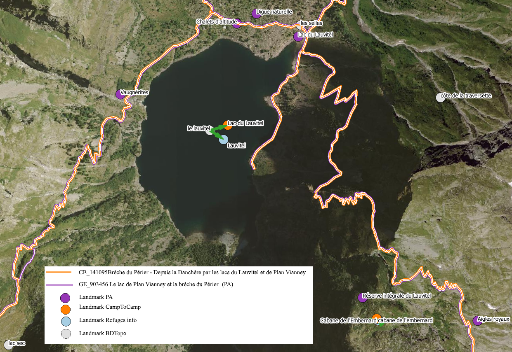
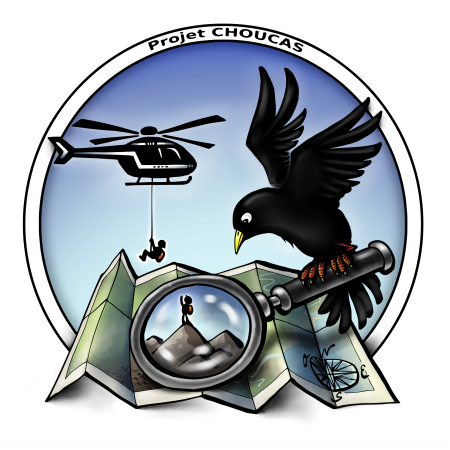

Appariement de données
Appariement de données
Appariemment des données issues du web afin de déterminer leurs bien-fondés dans le contexte du sauvetage en montagne.

Projet CHOUCAS (ANR, 2017-2020)